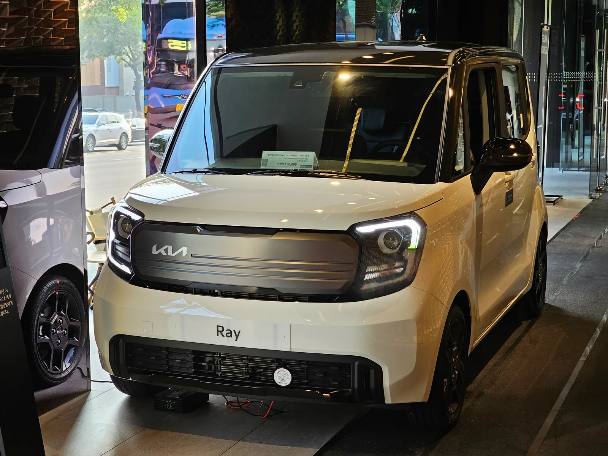
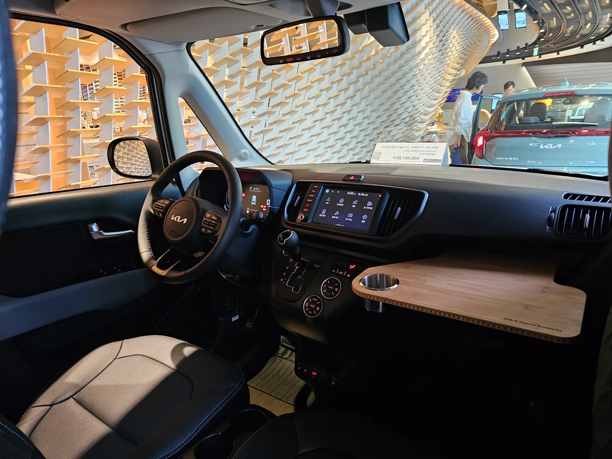
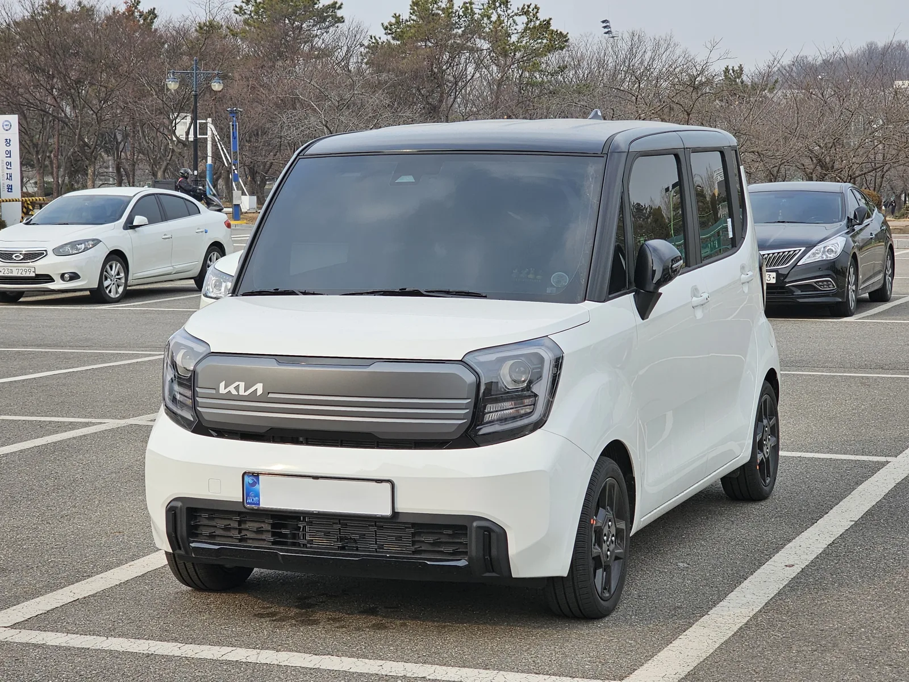
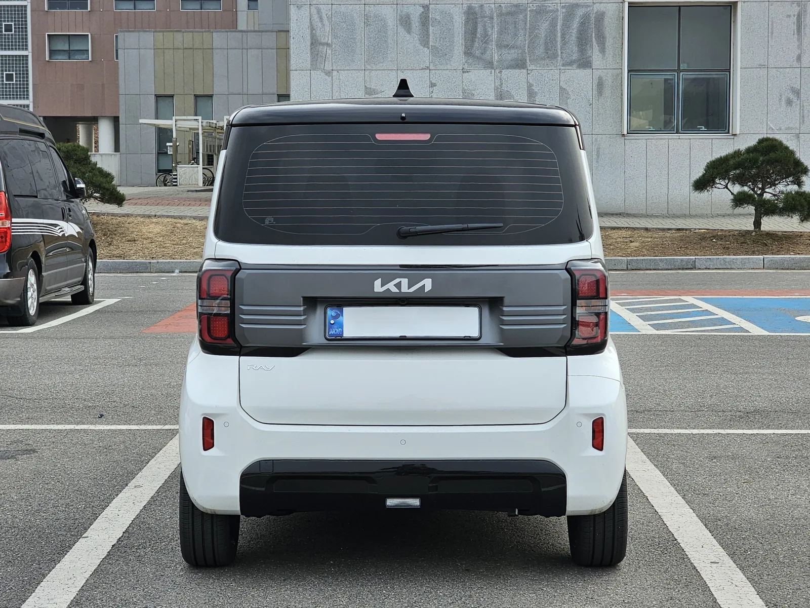

▲ 기아 레이. 2026년형 가솔린 모델은 트렌디 1,490만 원부터 시작하며 전 트림에 최신 ADAS가 기본 탑재됐다 ⓒ 기아
2026년형 기아 레이는 완전변경도, 부분변경도 아니다. 그런데도 국내 경차 시장에서 15년째 흔들림 없는 1위 자리를 지키고 있다. 화려한 신기술 대신 가격표와 실사용성만으로 승부하는 이 차의 가솔린·EV 트림별 가격, 그리고 오너들이 실제로 꼽는 강점을 시승기·오너 리뷰를 종합해 정리했다.
1. 가솔린 — X-라인 신설, 전 트림 ADAS 기본화

▲ 매장에 전시된 기아 레이. 2026년형은 전 트림에 전방 충돌방지 보조 등 최신 ADAS가 기본 탑재됐다 ⓒ Wikimedia Commons
2026년형 레이 가솔린 모델은 트렌디 1,490만 원, 프레스티지 1,760만 원, 시그니처 1,903만 원으로 책정됐고, 여기에 전용 엠블럼과 블랙 휠을 더한 X-라인 트림이 2,003만 원에 새로 추가됐다. 전년 대비 트렌디는 90만 원, 프레스티지는 85만 원, 시그니처는 70만 원 올랐다. 가격만 오른 것은 아니다. 전방 충돌방지 보조(차량·보행자·자전거 탑승자 인식), 차로 이탈 방지 보조, 운전자 주의 경고 등 최신 ADAS 기능이 전 트림 기본 사양으로 내려왔고, 시그니처 이상에는 후측방 충돌 경고·전진 출차 충돌방지 보조, 후방 교차 충돌방지 보조까지 포함된다.
| 트림 | 가격 | 전년 대비 |
|---|---|---|
| 트렌디 | 1,490만 원 | +90만 원 |
| 프레스티지 | 1,760만 원 | +85만 원 |
| 시그니처 | 1,903만 원 | +70만 원 |
| X-라인(신설) | 2,003만 원 | - |
2. 레이 EV — 205km 주행거리, 보조금 반영하면 얼마?

▲ 기아 레이 EV. 35.2kWh 리튬인산철(LFP) 배터리로 1회충전 복합 205km를 인증받았다 ⓒ 기아
레이 EV는 4인승 승용 기준 라이트 2,852만 원, 에어 3,062만 원(2인승·1인승 밴 트림은 이보다 저렴)으로 책정돼 있다. 배터리는 35.2kWh 리튬인산철(LFP)로 통일되며, 1회충전 주행거리는 복합 205km(도심 233km, 고속도로 171km) 수준이다. 장거리보다는 도심 출퇴근·근거리 이동에 최적화된 스펙이다.
실구매가를 가르는 변수는 보조금이다. 경형 전기차 특성상 국고보조금은 500만 원대 수준으로 알려져 있고, 여기에 지자체 보조금이 더해진다. 지자체별 지원 규모 차이가 커서 지역에 따라 최종 구매가가 수백만 원 단위로 갈릴 수 있는 만큼, 거주지 기준 정확한 보조금은 무공해차 통합누리집에서 확인하는 것이 정확하다. 바로가기
📍 보조금, 왜 지역마다 다른가
전기차 보조금은 국고보조금(전국 공통)과 지자체보조금(지역별 상이)으로 나뉜다. 같은 레이 EV라도 지자체 예산 소진 여부와 거주지에 따라 최종 구매가 차이가 클 수 있어, 계약 전 반드시 해당 지자체 공고를 확인해야 한다.
3. 박스카의 힘 — 슬라이딩도어와 적재공간

▲ 레이 실내. 우측 리어도어가 B필러 없이 활짝 열리는 슬라이딩 구조로, 좁은 주차 공간에서도 승하차와 짐 싣기가 수월하다는 평가가 많다 ⓒ Wikimedia Commons

▲ 전장 3,595mm의 작은 차체지만, 박스형 디자인과 2,520mm 휠베이스 덕분에 성인 4명이 타도 넉넉하다는 평가가 나온다 ⓒ Wikimedia Commons
레이의 오너 평가에서 가장 자주 언급되는 강점은 디자인이나 주행 성능이 아니라 '공간 활용성'이다. 좌측 리어도어는 일반 스윙 도어, 우측은 B필러 없이 활짝 열리는 슬라이딩 도어로 구성돼 있어, 좁은 주차 공간에서도 아이 카시트 승하차나 짐 싣기가 한결 수월하다는 후기가 많다. 시트를 완전히 접으면 웬만한 준중형 SUV 못지않은 적재공간이 나온다는 점도 자영업자·차박족 사이에서 꾸준히 언급되는 대목이다. 실제 오너 108명이 참여한 한 평가에서는 평균 9.1점이라는 높은 만족도가 나오기도 했다. 다만 이는 특정 커뮤니티·매체가 자체 집계한 표본 조사로, 전수조사 수준의 공신력을 갖는 자료는 아니라는 점은 참고할 필요가 있다.

▲ 레이 후면. 박스형 후미 덕분에 트렁크를 열지 않고도 짐 부피를 가늠하기 쉽다는 실사용 후기가 많다 ⓒ Wikimedia Commons
4. 15년째 경차 1위 — 신차 효과 없이도 팔리는 이유
레이는 출시 15년 차를 맞았지만 여전히 캐스퍼·모닝을 제치고 경차 판매 1위를 지키고 있다. 8월에도 3,718대가 팔리며 기아 내수 라인업 중 상위권 판매고를 기록했는데, 이는 신차급 화제성이 아니라 앞서 살펴본 슬라이딩도어·적재공간 등 실사용성이 누적된 결과로 풀이된다. 세부 판매 순위와 현대차 대비 실적 비교는 이미 다룬 바 있어 여기서는 짧게 언급한다.
✅ 레이 구매 전 체크포인트
· 가솔린은 X-라인 신설로 4개 트림(1,490만~2,003만 원) 체제, 전 트림 ADAS 기본화
· 레이 EV는 라이트 2,852만 원·에어 3,062만 원, 1회충전 205km
· 보조금은 지자체별 편차가 커 거주지 기준 사전 확인 필수
· 강점은 성능보다 슬라이딩도어·박스형 적재공간의 실사용성
· 15년 차 모델임에도 경차 판매 1위 자리를 유지 중
5. 정리
2026년형 레이는 가솔린·EV 모두 가격이 소폭 올랐지만, 그만큼 안전·편의 사양이 기본화됐고 X-라인이라는 새 선택지도 생겼다. 시승기와 오너 리뷰를 종합하면 레이의 경쟁력은 화려한 신기술이 아니라 슬라이딩도어와 박스형 실내가 만드는 '있는 그대로의 쓸모'에 있다. 신차 효과 없이도 15년째 경차 1위를 지키는 배경이 여기에 있다는 평가다.